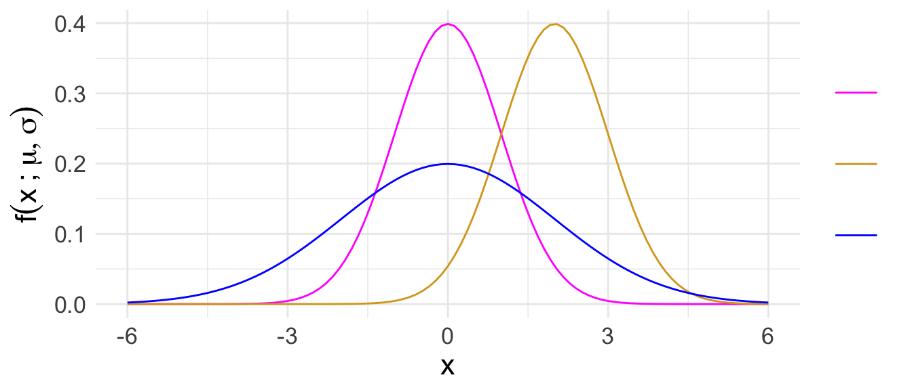
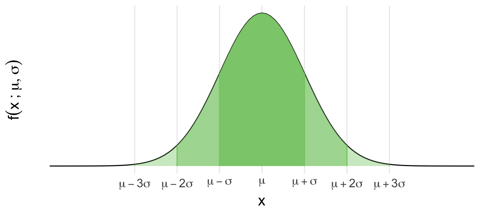
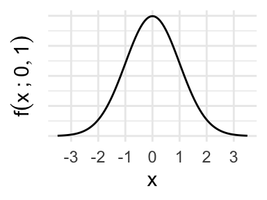
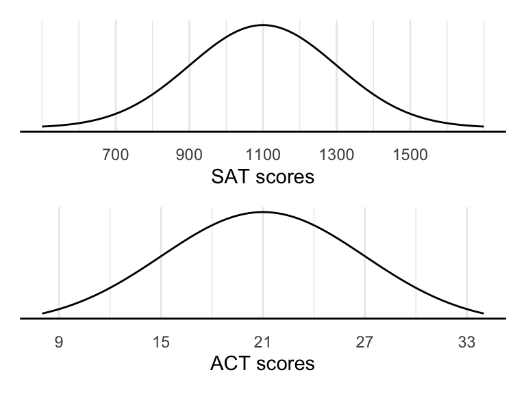
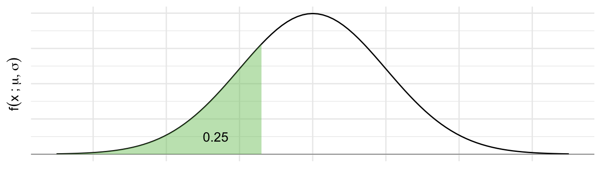
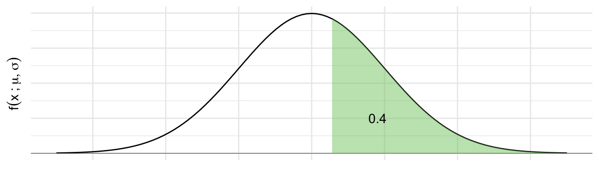

Normal distribution

68-95-99.7 rules

Finding areas
Suppose \(X \sim N(0,1)\)
Area less than -2 and greater than 2.
Area between 0 and 1.
Area to the right of 1.


\(\quad\)
\(\quad\)
\(\quad\)
\(\text{P}(\qquad\qquad\qquad) \approx\)
\(\quad\)
\(\quad\)
Z-score problem
The distribution of SAT and ACT scores are both nearly Normal. The SAT has a mean of 1100 and standard deviation of 200, while the ACT has a mean of 21 and standard deviation of 6. Suppose Ann scored 1300 on her SAT and Tom scored 24 on his ACT. Who performed better?

Percentiles


qnorm(0.25, mean = mu, sd = sigma)Percentile problems
Suppose SAT scores are Normally distributed with mean 1100 and standard deviation 200.
- Edward earned a 1030 on his SAT. We will find his percentile using code in two ways.
- First, draw a picture representing what we want to find. Then write code to find the percentile.
- Find Edward’s z-score. Write another line of code to find the percentile.
- What is the 97.5th percentile for SAT scores?
- Write code to answer this question.
- Write a different line of code to answer this question that involves a z-score.
- Unrelated to SAT scores: consider the standard normal \(N(0,1)\) distribution. The 25th percentile of this distribution is -0.67. Without doing any work beyond drawing a picture, what is the 75th percentile of the distribution?
Some practice problems
In a law school class, the entering students averaged 160 on the LSAT. The variance was 64. The histogram of LSAT scores followed the normal curve reasonable well.
About what percentage of the class scores below 152?
One student was 0.5 standard deviations above average on the LSAT. About what percentage of the students had lower scores than he did?
Weights of 10-year-old girls are known to be Normally distributed with mean of 70 pounds and standard deviation of 13 pounds. Find the probability that a 10-year-old girl weighs between 60 and 85 pounds two ways:
Optional, but helpful: draw a sketch of the curve and shade in the region of interest.
Write the probability of interest in \(P()\) form. Then write the
Rcode necessary to find this probability, and actually execute the code to obtain the probability.Confirm your solution in (b) by transforming to z-scores first, then using code again to obtain the probability.
Consider the same scenario as in 2. Without using any code than what is provided below, find the 60th percentile for the weight of 10-year-old girls.
qnorm(0.6, mean = 0, sd = 1)[1] 0.2533471\((^*)\) Suppose body temperatures are Normally distributed with mean \(98.6^\circ\) F and standard deviation of \(0.7^\circ\) F. Assuming this is true, answer the following:
Fevers \(103^\circ\) F or higher are considered dangerous. What fraction of people would be expected to have such high a fever?
According to quick Google search, a range for low-grade fever is between \(99.5^\circ\) F and \(100.3^\circ\) F. What is the probability of having a low-grade fever?
What body temperatures would you consider as unusually low? Briefly explain why.
Provide two intervals that each capture/contain 80% of body temperatures.